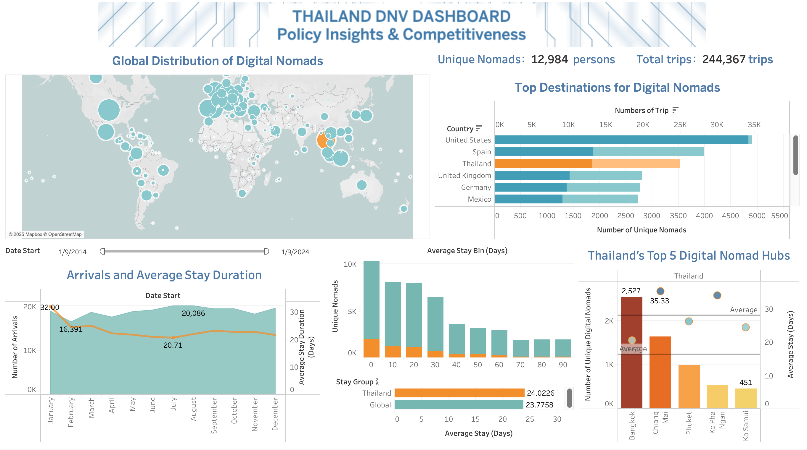

金融风险与策略分析
拆解信用、欺诈与还款压力，连接风险指标、产品机制、客户分层和商业目标。
Career positioning
连接金融逻辑、风险判断与数据证据。
我的训练横跨金融、数据分析与管理科学，关注信用风险、市场波动、企业经营与金融产品策略。既能从业务与监管视角拆解风险问题，也能使用 Python、Excel、Tableau 和 Wind 完成数据处理、模型比较、主体研究与可视化表达。
我希望在金融分析、风险策略、商业分析或数据分析岗位中，把模型结果翻译为可解释的判断，将风险指标连接到产品机制与业务行动。
Core capabilities
拆解信用、欺诈与还款压力，连接风险指标、产品机制、客户分层和商业目标。
完成预处理、特征转换、回归建模、参数测试、误差评估及过拟合识别。
结合财务、市场、宏观和主体信息开展企业筛选、同行比较与信用风险核查。
使用 Tableau 与 Excel 将复杂分析转化为交互看板、管理指标和决策建议。
Selected finance & analytics cases
按金融与数据分析岗位相关性排序，覆盖风险产品策略、波动率建模、信用研究、政策数据与业务归因。
Business Analyst / Strategy Consultant · 业务分析师 / 战略顾问
围绕 Afterpay 先买后付业务的信用风险、欺诈风险及用户还款压力，设计 RiskGuard 智能风险管理产品方案。基于用户消费、还款、账户行为与交易异常等数据构建动态风险评分机制，并设计软额度管理、分层风险提醒及困难用户援助功能。在方案中引入实时数据处理与自动化风控流程，负责风险痛点分析、功能框架设计、商业价值论证及英文汇报展示。
数据建模分析
针对 VIX 指数变化中的非线性特征，搭建并比较常数、线性、径向基函数和 Laplace 基函数等多类回归模型。使用 Python 完成数据预处理、训练集与测试集划分、特征转换及模型拟合，并测试基函数数量 k 从 1 至 30 时的拟合效果和泛化能力。通过误差指标与可视化识别模型复杂度和过拟合之间的关系，为金融波动率预测与风险分析筛选更合适的模型结构。
数据分析师 / Tableau 可视化设计
对全球数字游民出行、目的地分布、停留时长和城市偏好数据进行清洗与可视化。通过地图、趋势图、排名图、双轴图和日期筛选，分析泰国在全球目的地中的竞争力，并识别曼谷、清迈、普吉等核心数字游民枢纽，为签证政策、目的地营销及旅居服务设计提供依据。

中信证券 · 债券承做实习生
筛选深圳、广州地区发债企业并建立潜在主体名单，基于 Wind 开展股权结构穿透、实际控制人识别、失信与合规核查。整理财务、市场及宏观数据，使用 Excel / Python 完成清洗与结构化处理，跟踪企业指标、进行同行业对比，并将结果转化为研究报告图表与信用风险支持材料。
业务数据分析 / 增长归因
跟踪微信公众号、游戏活动转化与社区反馈数据，识别内容表现和活动参与的关键损耗。结合版本更新、节日节点、时装与坐骑卖点重构内容策略，并用后续阅读与参与数据验证方案，形成可持续复盘的运营数据基础。
Analysis process
明确业务问题、对象与决策目标。
清洗、核对并建立结构化数据。
设计指标、分层与比较框架。
建立清晰的信息层级和交互看板。
输出洞察、行动建议与复盘方案。